| 业务指南 | 乾康（上海）信息技术有限公司 > 业务指南 |
| 互联网金融OTO商业模式平台化建设 | 2013-11-01 |
| 微小贷款咨询运营业务 | 2013-11-01 |
| 商业银行微小贷款培训 | 2013-01-22 |
| 乾康自助设备管理平台 | 2013-01-22 |
| 信用卡咨询运营业务 | 2013-01-22 |
| 商业银行自助设备管理服务外包方案 | 2013-01-22 |
| 业务指南 | 乾康（上海）信息技术有限公司 > 业务指南 > 商业银行微小贷款培训 |
商业银行微小贷款培训
培训背景
微贷款（Micro Credit）是国际上成熟的金融产品，是指专门为中低收入阶层和微小企业提供的、商业可持续的小额贷款。微贷款技术的使用和推广是近年来金融市场的重要创新，其在中国金融领域的大规模运用，将从根本上解决中低收入阶层和微小企业难以获得传统抵押贷款服务的困境，也将成为中小金融机构未来的主营产品。
微贷款产品的成熟，经历了三个主要阶段：非正规金融机构探索；福利型微贷款探索；制度型微贷款技术成熟。制度型微贷款项目能够实现商业可持续运作，在促进微小贷款机构专注于微金融领域的同时，能够提高微金融业的专业化程度和服务效率。
培训目标
提高商业银行核心竞争力及可持续发展能力，保证微贷业务的全面开展及顺利进行，培养一支具有独立开展业务、有效控制风险、深入开拓市场、出色完成业绩的高素质核心队伍。
培训对象
微贷培训培训对象为微贷业务主管、微贷信贷员及微贷后台人员。
培训方式
微贷款人员培训与培训体系建设是微贷款业务管理与队伍建设的重要内容，微贷款业务采取全员培训模式，采取理论与实践相结合的培训方式。
课堂培训
将微贷人员集中在一起进行系统的理论培训。内容涉及微贷业务信贷流程、金融基础知识、银行业务和素质训练，比如：交流技巧、时间管理等。培训中还结合案例教学、角色扮演游戏和小组讨论，以提高学员们的主动性和参与度。课堂培训课程、内容、培训师应相对固定，培训的时间较短，一般为一至两周。课程结束后会进行测试。
课堂培训需要注意以下事项：
授课讲师要提前准备讲义和互动话题，讲义内容应框架清晰、要点突出，并具备微贷业务岗位实践的实用性；
课程设置既要注意各课题之间内容衔接，又要尽量避免或减少核心内容的交叉或重复；
讲师授课时应创造活跃的互动氛围，引导信贷员不断思考和主动参与；
授课讲师要引导参加理论培训的学员之间树立相互帮助、相互激励、相互交流的良好关系，培养提升自我价值和团队合作共赢的精神。
在岗培训
在岗培训主要采用学徒制度。微贷培训生跟随培训师现场实践。培训师一方面向培训生解释工作内容、工作步聚，回答他们的提问，进行有针对性的评估和辅导。另一方面观察培训生在工作中的表现，定期评估。
专题培训
专题培训是针对实际工作过程中的问题，组织开展的小型专题讲座和讨论。引导微贷人员共同找到答案或者解决办法。专题培训多是涉及到信贷员在信贷流程操作中出现的问题，如识别申请表各项内容间的内在联系、正确进行交叉检验等。
| 业务指南 | 乾康（上海）信息技术有限公司 > 业务指南 > 乾康自助设备管理平台 |
乾康自助设备管理平台
随着各商业银行近年来各类自助设备数量的不断增加，如何对这些设备进行有效的管理是摆在每个银行管理人员面前的一个不容忽视的问题。自助业务运营管理涉及的环节较多，其主要包括设备运行监控、维护维修调度、加钞计划制定、清机加钞、维护维修、配钞清点、资金调拨、对账、异常账务处理、客户投诉受理和处理、安保等。
目前业务运营涉及的主要环节均为手工操作，效率低下，工作强度高且易于出现差错，业务运营的规范化和精细化操作难度较大，不利于业务的长远发展和操作风险控制。手工操作在运营规模较小时还基本能适应业务需要，但随着自助业务运营规模的不断扩大，运营管理的难度和复杂度也随之提高，就需要有新的高效操作方式来解决面临的问题，提高运营管理各个环节的工作效率，增强业务操作的规范化和精细化，借助外部约束来控制操作风险，从而为自助业务的长远发展奠定坚实的基础，进一步提高自助业务运营管理水平。
针对银行的这些管理问题，我们乾康公司借鉴国外自助设备管理方面的先进经验，并结合我国商业银行的实际运行特点，开发了一套具有完全自主知识产权的自主设备管理系统，该系统将会对银行自助设备的运维管理带来有效的帮助。
乾康自助设备管理平台技术内涵：
一是提高事件监控管理能力。ATM网络能否安全、稳定运行，是银行最为关心的问题，而减少宕机时间、缩短维修时间，是银行实现ATM开机时间最大化的前提。因此，实现对ATM网络状况的监测非常关键。而一套ATM运营管理系统所具有的事件管理功能，能够对ATM的整个运行周期和修理进展情况进行跟踪，接收ATM或网络发来的所有状态消息，从而有效提高事件监控管理的能力。
二是提升ATM客户关系管理能力。通过持卡人在ATM上发生的交易信息，银行能够深入了解和研究客户的财务状况、交易习惯和使用心理，对目标客户群进行细分，为不同用户提供定制的个性化金融服务，将ATM打造成用户与银行之间的良性沟通渠道。而实现这一切都离不开ATM运营管理系统所具有的内容分发功能。
三是提升ATM现金管理的能力。合理配备ATM中的现金储备量，是解决其运行效率和运行成本这对矛盾的关键。在ATM现金管理方面，银行以往一般都是根据经验或根据ATM的缺钞信息决定其现金储备量的大小或加钞的时机。而ATM运营管理系统所具有的现金管理功能可以帮助银行对现金流量进行收集和分析，提供合理的现金配备方案，同时为所有与现金加钞有关的合作伙伴提供自动化的预警和通知、监控日常的ATM现金储备水平等。
| 业务指南 | 乾康（上海）信息技术有限公司 > 业务指南 > 信用卡咨询运营业务 |
信用卡咨询运营业务
信用卡业务作为金融业的一项重点业务，这些年的发展异常迅猛，2012年年底累计发卡量已经达到3.31亿张，信用卡授信总额也达到3.49万亿元。随着7月20日央行放开贷款利率管制，利率市场化即将给银行带来严峻的考验,信用卡业务成为银行业务转型的主力军,如何抓住机遇寻求转型发展机遇，综合提升整体服务能力，成为摆在很多银行面前的重大课题。
信用卡咨询运营业务主要包括:
一、信用卡业务综合发展策略咨询
对银行所在经营区域以及业务发展现状进行细致分析，综合解析符合本行实际的信用卡综合业务发展战略内容。建立具有自身特色的、目标明晰的、安全可行的信用卡业务发展战略。通过对实施计划与发展战略的配合实现计划探讨，明确具体实行方案，并得到行高层全各方位的资源支持与配合。
构建具有自身发展特色的战略规划，实现以下战略目标：
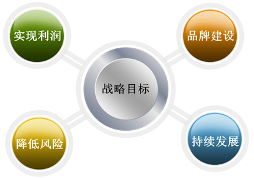
二、信用卡管理架构、业务流程设计咨询
帮助银行建立或重造信用卡各个管理职能环节，使银行从信用卡中心的管理架构到管理操作流程均得到较好的优化，帮助银行合理配置管理资源，较好的符合相关管理要求和防范各管理环节风险，以达到提升银行的信用卡综合管理水平的目的。
具体内容包括：
1、辅导银行建立和优化信用卡中心管理架构。
2、辅导银行完善管理所需各项规章制度建设。
3、辅导信用卡中心建立和完善、细化业务流程设计。
4、辅导银行对业务所需各岗位职责和风险控制环节再造。
5、对银行各层管理人员进行全方位信用卡业务培训，对信用卡中心核心管理人员进行提高培训。
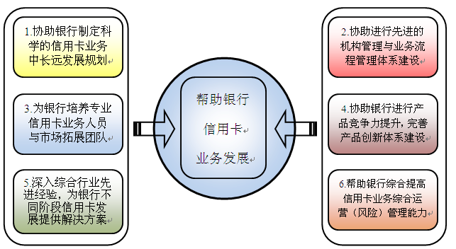
信用卡中心管理架构建设咨询：
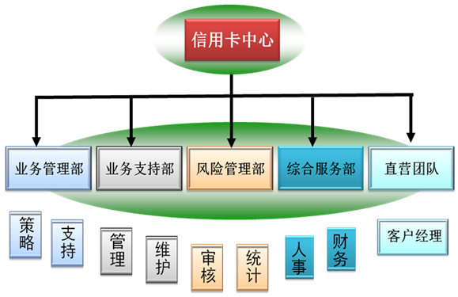
三、信用卡业务产品创新设计咨询
1、信用卡综合产品内涵设计。
2、信用卡品牌以及主打产品设计。
3、信用卡以及IC应用功能设计。
4、信用卡个人消费微贷产品设计。
5、信用卡多特色产品综合设计。
6、各项产品相关业务流程设计。
创建产品创新体系：
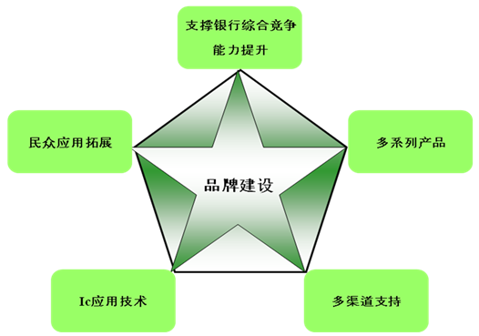
四、信用卡业务综合风险管理策略咨询
主要是帮助银行建立较完善的风险防控体系，即对信用卡业务的审核、审批、授信、催收等各个主要风险管理关键点进行系统化的风控建设，协助银行做好相关责任机制和监测手段的建设，以达到综合提高整体信用卡业务风险防控能力的目标要求。主要内容包括：
1、辅导银行建立完善信用卡业务资信审核机制。
2、辅导银行建立完善各级风险管理责任制度。
3、辅导银行建立完善风险管理问责处置机制。
4、辅导银行建立完善信用卡催收管理办法及流程。
5、辅导银行建立完善不良资产处置与管理机制。
完整的信用卡业务风险管理体系：

五、信用卡中心管理人员与直营团队培养咨询
在完善管理体系的基础上针对体系内各个岗位的需求为银行进行专业化人才的招募、考核、专业培训、市场适应锻炼、业务模拟运营、业务运作指导等，以充分满足管理与发展的人才需求。
1、辅导银行制定和实施营销方案。
2、依据市场现状制定符合市场需要的产品营销策略。
3、协助银行建立符合本行特色的新型客户经理管理体系。
4、协助银行建立信用卡业务直营团队，共建直营团队管理核心。
5、建立符合业务发展需要的直营团队配套的各项管理规章制度。
6、辅导银行建立具有强大推动力的信用卡业务的奖励激励。
7、辅导银行建立与奖励相匹配的责任管理制度。
8、负责对银行的直营客户经理以及相关负责人进行全面的培训。
可视化业务流程控制体系：
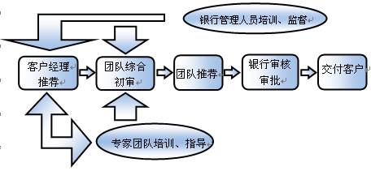
六、综合运营战略合作咨询
在包含上述五项咨询的基础上进一步进行实施咨询即与银行共享收益，负责咨询效果的实现，收益来自于确保银行取得稳定业务增长。
具体内容包括：
1、与一行一起进行综合业务管理实施。
2、长期业务跟踪辅导以及业务指导运作。
3、直营团队的带领成长与业务拓展指导。
4、银行经营区域的综合市场调研并进行综合竞争状况分析。
5、负责指导银行进行创新性、盈利性与品牌性的产品设计与实施。
6、负责指导银行建立切实可行的市场推进机制以及年度考核指标体系，并结合发展需要指导制定具有行业优势的业务体系年度依据长远的奖励激励措施并协助实施。
7、辅导银行做好其分支机构的管理，做好基层团队建设，推进对管理层、关键操作层以及市场营销人员开展不同需要的培训与业务督导。
8、帮助银行在信用卡综合能力不断提高的基础上提升信用卡品牌形象。
| 业务指南 | 乾康（上海）信息技术有限公司 > 业务指南 > 商业银行自助设备管理服务外包方案 |
商业银行自助设备管理服务外包方案
乾康公司一直以引入国际成熟运营模式，发展国内金融自助渠道业务为己任，凭借强大的投资实力、专业化的管理团队，围绕金融电子支付，提供个性化、专业化的运营服务：设备提供、商业选址、运营管理、维修维护、软件开发和增值业务拓展等。
作为零售银行服务体系的重要组成部分，自助设备的管理主要包括自助银行商业选址、网点建设、业务管理、运行管理、设备维护管理、安全管理、营销管理。自助银行的建设涉及到银行许多业务环节，需要科技部门、电子银行部、保卫部门、后勤保障部门以及计财部门共同配合，并征得监管当局和公安部门同意后才能完成最终的开业和运营，为此我们乾康公司将针对商业银行自助设备的全过程建设和管理提出我们的实施方案：
离行式自助银行商业选址：
乾康公司基于多年来对银行自助渠道建设方面的专业化实施经验，以领先的商业选址模型为依托，可为商业银行提供了自助渠道规划和实施方案，不仅提高了银行有效服务半径，更使银行的自助渠道运行效率得到了大幅提升。
乾康公司优秀的商业选址水平，是依托优秀的项目管理能力和商业选址后台支持系统作为保障。乾康的银行网点和自助银行商业选址评价系统是基于GIS技术，利用电子地图为空间坐标平台，将影响网点交易量的所有环境因素，统一纳入分析和计算，使调查数据和分析结果可以直观的显示在电子地图上。
XX市内150个建议点位vs. 市场潜力
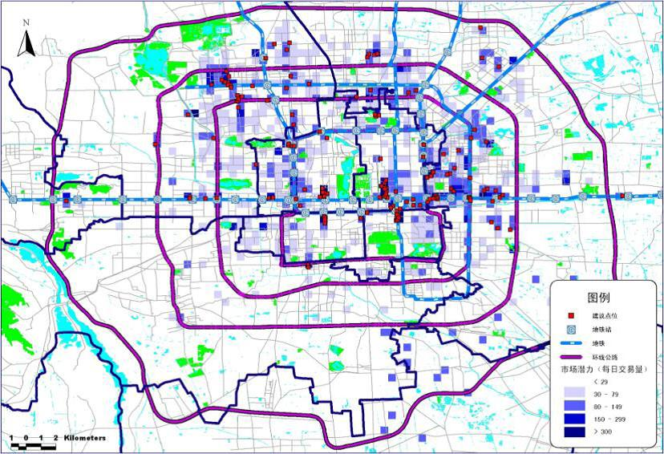
备选点址基本情况：地理分布（示例）
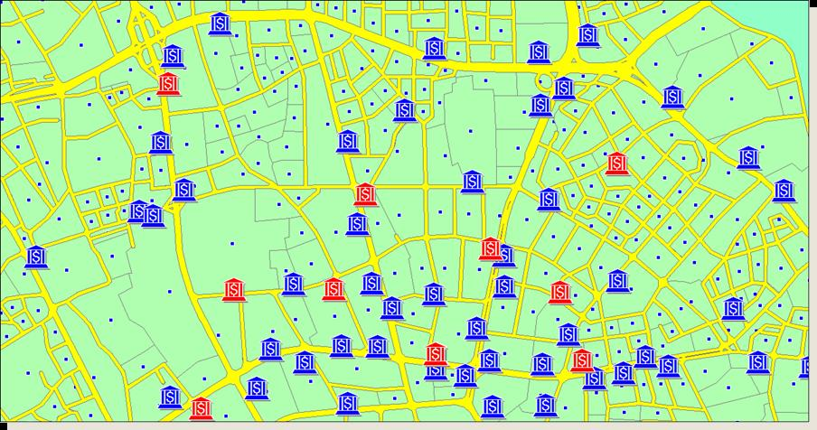
蓝色表示所有备选点址，红色表示提交点址
我们乾康公司本着效率优先的原则进行自助银行的商业选址工作，即以节约经营成本、增加收益，最大限度地吸引客户、提高服务效率、促进业务发展为目标，根据初期与银行共同商议确定的《自助银行建设项目计划书》的要求进行具体的自助银行选址工作。乾康公司专职项目经理在商业选址时将根据乾康公司商业选址调查表的各项要素进行相关调查核实，最终将调查数据发送至乾康公司上海总部导入《银行网点和自助银行商业选址评价系统》进行评审，最终出具评审报告提交银行终审确定。同时乾康公司还负责与业主进行沟通协调（与出租方初步拟定合同要素，主要包括：房屋租赁的租期、租金及其递增情况；电费、物业管理费、门前三包费等费用清算；双方承担的权利和义务等），向银行提交《自助银行选址评估表》、合同范本、业主所拥有的土地使用权证复印件、房屋产权证或契证复印件、公司营业执照或个人身份证（个人房屋）复印件，如果出租方非房屋产权人，另需递交产权人同意转租授权书及双方合同复印件。配合银行完成地址的确认和出租合同的签订工作。向监管部门和公安部门申请报备工作以及租赁合同中涉及的相关费用由银行负责。
自助银行建设：
在获得监管当局和公安部门开工许可的情况下，自助银行的设计、装修以及安保设施的布放工作主要由银行负责，在自助银行的建设期间，乾康公司协助银行进行以下工作。
根据银行的要求，指引并监督物流公司卸货，并协同银行人员开箱验收，检查外包装、机器外壳是否完整，是否破损，机器内部部件是否掉落、松动；若无可进行收货签收。
引领银行确定的装修公司到物业现场做装修测量，与业主沟通安装方案，装修公司确认装修方案并装备装修材料。
装修公司进场装修过程中乾康项目经理保持与业主的沟通，保证装修过程顺利进行。
协调电信、监控公司、安防公司等配套施工单位按时、顺畅施工。
所有工程施工完毕乾康公司提请银行相关部门组织银监部门和公安部门验收。
自助设备运营管理：
1、自助设备管理平台：我们乾康公司可为商业银行提供一套涵盖ATM设备监控、长短款对账、日常维护、故障处理、现金管理、自助设备维护质量跟踪及各类报表处理等功能的管理平台。主要功能有设备监控模块、对账模块、远程管理模块、事件跟踪管理模块、现金管理模块、统计分析模块、用户管理模块和系统管理模块。该系统支持对国内各类ATM品牌的管理，采取B/S架构，通过对各类用户的分级授权管理控制系统操作风险。通过该管理平台，银行可以有效的对设备维护服务商的服务质量进行跟踪监督。我公司派驻在银行的专职项目经理及管理团队将负责维护和管理该自助设备管理平台，帮助银行梳理自助设备的各类管理流程，根据设备在运行过程中出现的各类问题第一时间通知相应的维护人员进行维护，并对维护的质量进行跟踪，同时协助银行做好各类长短款的查找和处理工作。
2、自助设备维保：我公司可为银行提供多品牌ATM的维保。
持续改进：
各类自助设备和自助银行的设立不是根本目的，是否能够有效的发挥其效能才是建设的根本，为此我们乾康公司派驻银行的的专职项目经理将对所有自助设备的运行情况进行有效的跟踪分析，即每月对自助设备的交易情况、故障解决情况、是否存在新的市场机会和存在哪些风险点进行剖析，并结合分析数据对全行自助设备的运行状况进行整体的效能评估，最终向银行相关主管部门提交一份月度分析评估报告。
我们乾康公司愿意通过自身专业化的咨询、规划和服务，与商业银行携手共同提升金融自助渠道的运营管理水平和运行效益。
| 业务指南 | 乾康（上海）信息技术有限公司 > 业务指南 > 微小贷款咨询运营业务 |
微小贷款咨询运营业务
乾康公司的微小贷款咨询运营业务是基于IPC微贷应用技术，总结多家银行小微贷业务运营中的先进实战经验，在此基础上，经过深入研究、总结提炼，形成独具本土特色的，涵盖客户识别、风险控制、全流程管理的乾康小微贷款业务体系。
乾康公司创新了客户经理分层管理体系、客户网络化维护模式、以及高效的绩效评估考核办法、责任清晰奖惩准确的责任管理体系。在上述体系的指导下，使乾康微贷业务体系比传统的微贷体系更加有激励效果，使银行与员工共享收益。最大限度激发员工的工作积极性和忠诚度。
乾康公司提供的微小贷款咨询运营业务一般分为以下几个部分：
一、尽职调查
对银行微小贷款业务的开展方式、特色、目标客户群、系统运行环境进行相关调查，为后续各项服务任务的开展提供参考和指导。主要通过与银行高管、部门经理、基层员工、监管部门等的约谈和对银行现有制度的学习了解银行现状及存在的问题。通过市场调查了解银行所在地区的客户和市场竞争情况。
二、微小贷款体系建设
为银行建立全新、相对独立的微小贷款管理体系，以全面管理微小贷款业务，并配合顾问推广微小贷款业务，包括：
1、制定银行微小贷款业务发展目标，并合理分解形成阶段性目标和业务发展计划；
2、为银行建立合适的业务管理办法、操作手册、风险控制体系、内审制度、合规性要求、薪酬考核体系等制度和文档；
3、设计微小贷款业务组织架构，明确人员职责分工，建立微小贷款信贷委员会；
4、设计贷款产品、贷款流程，明确审批授权结构。
5、设定人员配备及选择标准，进行人员选聘，包括业务主管人员和业务工作；
6、制定市场营销策略；
7、分析微小贷款业务的盈利能力及利润贡献度；
乾康小微贷款业务体系：
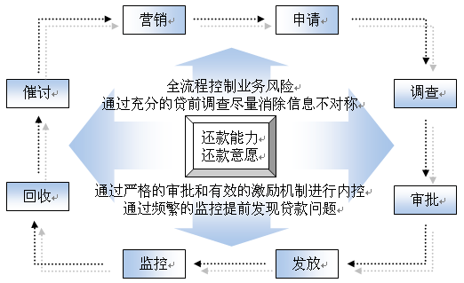
三、培训实施
首先对高管人员、部门负责人进行专业培训，统一思想。对微小贷款业务人员进行课堂培训和业务操作培训，并进行评估和淘汰。
四、业务运营
乾康公司为银行运营微小贷款业务的专营机构，完成银行提出的业绩目标。经过上述服务阶段，最终形成以下项目成果：
1、银行建立微小贷款业务体系。
2、银行具备独立运转微小贷款业务的能力，并实现快速、安全的规模扩张。
3、银行具备自我培训能力，并拥有一批素质过硬的专业人才
小微贷款专营机构设计建议：
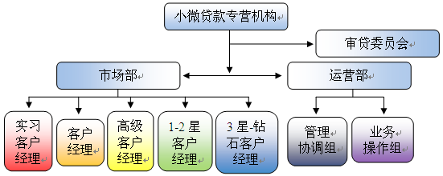
| 业务指南 | 乾康（上海）信息技术有限公司 > 业务指南 > 互联网金融OTO商业模式平台化建设 |
互联网金融OTO商业模式平台化建设
一、OTO业务简介
OTO商业模式是一种新诞生的电子商务模式，这种模式大大的缩短了消费者决策时间，“OTO”是“Online To Offline”的简写，即“线上到线下”，OTO商业模式的核心是把线上的消费者带到现实的门店中，通过在线支付购买线下的商品和服务，再到线下去享受服务。2012年对于电子商务来说会是一个关键的一年，传统企业频频试水电商，本公司通过不懈的努力，致力打造适合中国国情的区域性银行互联网金融平台。
二、本公司OTO产品理念
本公司平台产品支持个人、商户、机构用户三大用户群同时在线进行银行各类金融产品平台功能操作的线上服务。整合了银行资产业务与负债业务两大业务类型，真正实现了客户在线操作即可购买银行产品和服务，这为拓展银行业务提供了更多的便利，同时帮助银行大大节省了人力物力成本，更有效的掌握客户信息，使银行将自身业务产品更好地推介于目标客户，使客户自行对比，选择产品。
平台客户在填写个人资料进行平台注册之后，可根据平台为其提供专业化银行产品规划进行投资理财或发起个人贷款业务申请。在其进行选择后，其在平台内选择业务区域及银行，此时平台审核客户信息后将这一客户申请发送给银行做业务后台处理，然后该业务经银行最终核准后，在该行落地实施。平台的建立帮助多种金融机构产品的集中采集，客户在一个平台就可实现个人金融业务的申请。而银行定期根据其业务发展在平台上发布产品，便于客户在线进行认购申请，机构客户以配合银行为基础，同时在平台上进行自身业务拓展，保障平台正常运营，推动银行业务全面发展。
在综合金融日益临近的今天，本公司平台产品应运而生，它的建立可帮助城商行、农商行整合自身资源，优化资源配置，在付出较少人力物力的情况下拓展业务，并获得稳定的资金回报，更好的推介银行业务，为城商行、农商行二次腾飞插上信息化金融这一翅膀，全面助推为城商行、农商行战略转型。
前期主要以专业的黄金商城和金融商品商城作为起步点,实现黄金的网上交易,并逐步拓展黄金业务的延伸产品,同时实现金融产品商品化,实现网上金融商品买卖建设方案如下:
三、互联网平台黄金商品交易区
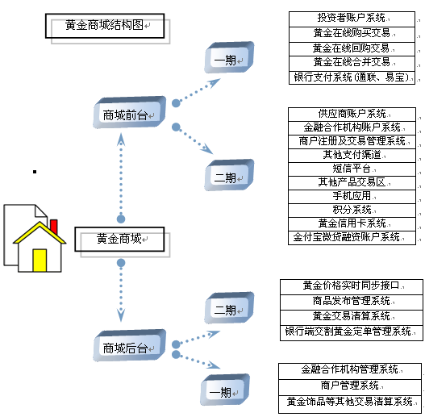
四、互联网平台金融商品交易区
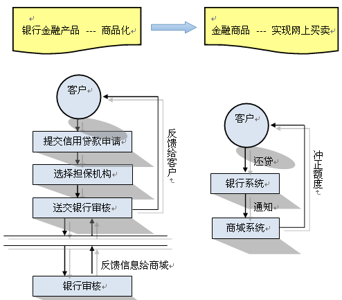
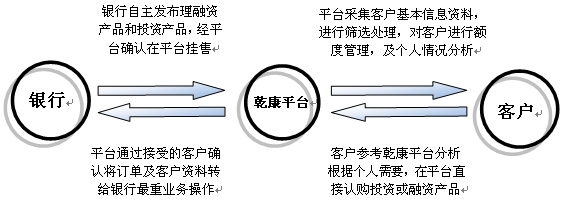